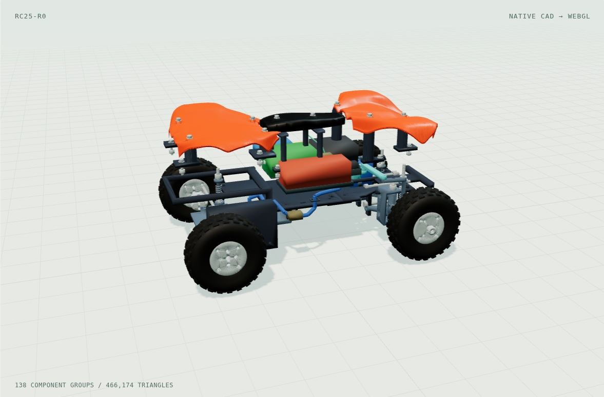
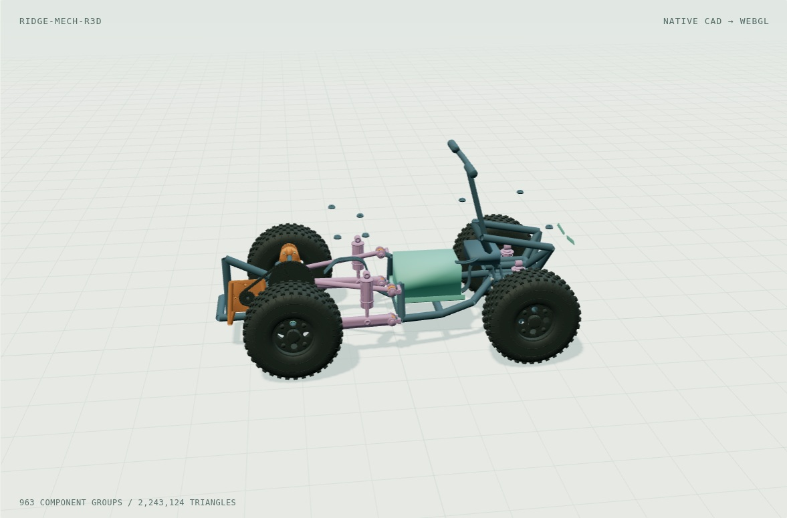
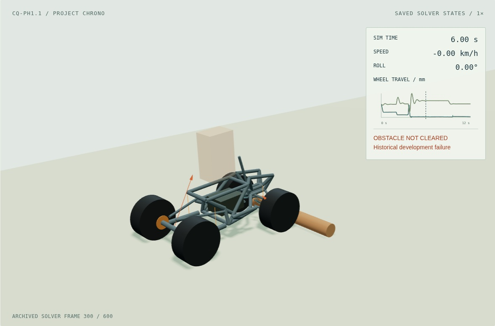

Define
Write the question, constraints and what a useful experiment would establish.
OPEN ENGINEERING / EXPERIMENTAL v0.1
A reusable notebook for the journey from an idea to an inspectable prototype. Bring your geometry, record your decisions, and connect the results.
Python + browser. Local files. Your project, your tools.
Download source v0.1.0 ↓THE WORKFLOW
The vehicle is a worked example. The project format is yours to extend to robots, mechanisms and other engineering studies.
Write the question, constraints and what a useful experiment would establish.
Bring authored geometry through a documented, checksum-verified asset format.
Orbit the model, isolate a system and separate groups to understand the connections.
Record revisions, parent relationships and the decision behind each branch.
Attach scoped evidence and replay saved body poses from an external experiment.
Make the next review easier with a shareable study, source notes and a film.
THE WORKED EXAMPLE

138 authored groups. Known steering failure retained.

Scoped interference findings remain attached to R3d.

Saved solver states from a separate simplified model.
MAKE IT YOURS
The starter creates an original desk-rover fixture, a project manifest and a working inspection view. Replace the geometry as your experiment develops.
Follow the complete tutorial →python3 tools/project.py init projects/my-rover \
--name "My rover"
python3 tools/project.py validate \
projects/my-rover/project.json
python3 tools/serve.pyA reusable software workbench and inspectable digital examples. Vehicle fit, manufacturing readiness and physical performance remain unverified. Solver replay displays recorded data; it does not run a new simulation in your browser.
Read the scope and limitations →